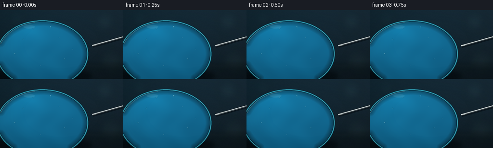
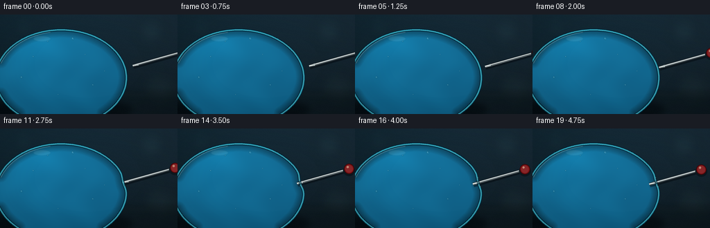
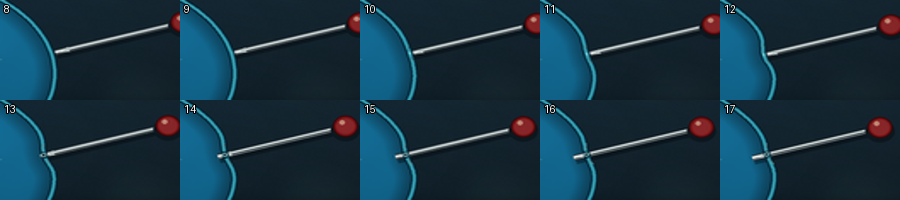

CODING AGENTS AS PIXEL WORLD MODELS
traex/GPT-5.6-Sol · phygen_024
点击播放 · 原生 RGB 像素
逐轮保存的候选
回放视频、检查图与代码变化。
每份候选均可单独播放。实际图片检查记录在下方工具轨迹中。
候选 01播放与检查图
点击播放 · 原生 RGB 像素


展开代码变化
--- 上一保存版本
+++ 本次保存版本
@@ -0,0 +1,242 @@
+from pathlib import Path
+import math
+import numpy as np
+import cv2
+from PIL import Image, ImageDraw, ImageFilter
+import artifact_io
+
+W, H, N = 256, 144, 20
+S = 4
+WW, HH = W*S, H*S
+rng = np.random.default_rng(24024)
+
+
+def scpt(p):
+ return (int(round(p[0]*S)), int(round(p[1]*S)))
+
+
+def smoothstep(x):
+ x = np.clip(x, 0.0, 1.0)
+ return x*x*(3.0-2.0*x)
+
+
+def alpha_comp(base, overlay):
+ return np.asarray(Image.alpha_composite(Image.fromarray(base, 'RGBA'), overlay), dtype=np.uint8).copy()
+
+# Cinematic, defocused dark backdrop. It stays fixed, emphasizing the slow physical motion.
+yy, xx = np.mgrid[0:HH, 0:WW].astype(np.float32)
+yn, xn = yy/HH, xx/WW
+base = np.zeros((HH, WW, 4), dtype=np.uint8)
+base[..., 0] = np.clip(10 + 9*(1-yn) + 6*xn, 0, 255)
+base[..., 1] = np.clip(24 + 17*(1-yn) + 4*xn, 0, 255)
+base[..., 2] = np.clip(31 + 22*(1-yn) + 5*xn, 0, 255)
+base[..., 3] = 255
+
+# Out-of-focus practical lights behind the subject.
+bokeh = Image.new('RGBA', (WW, HH), (0, 0, 0, 0))
+bd = ImageDraw.Draw(bokeh, 'RGBA')
+for x, y, r, col in [
+ (218, 24, 19, (71, 118, 122, 35)), (231, 108, 25, (65, 98, 94, 30)),
+ (34, 18, 14, (61, 130, 143, 28)), (201, 71, 10, (177, 125, 70, 18)),
+ (145, 18, 8, (90, 144, 152, 20))]:
+ bd.ellipse(((x-r)*S, (y-r)*S, (x+r)*S, (y+r)*S), fill=col)
+bokeh = bokeh.filter(ImageFilter.GaussianBlur(10*S))
+base = alpha_comp(base, bokeh)
+
+# Dim tabletop and soft contact shadow.
+table = Image.new('RGBA', (WW, HH), (0, 0, 0, 0))
+td = ImageDraw.Draw(table, 'RGBA')
+td.rectangle((0, 113*S, WW, HH), fill=(11, 22, 27, 150))
+td.line((0, 113*S, WW, 113*S), fill=(92, 124, 127, 18), width=S)
+td.ellipse((-18*S, 121*S, 191*S, 153*S), fill=(0, 2, 4, 125))
+table = table.filter(ImageFilter.GaussianBlur(4*S))
+base = alpha_comp(base, table)
+
+# Fine stationary film texture.
+noise = rng.normal(0, 1.15, (HH, WW, 1))
+bf = base[..., :3].astype(np.float32) + noise
+base[..., :3] = np.clip(bf, 0, 255).astype(np.uint8)
+
+cx, cy, rx, ry = 88.0, 91.5, 94.0, 69.5
+contact_theta = -0.205
+P = np.array([cx + rx*math.cos(contact_theta), cy + ry*math.sin(contact_theta)], np.float32)
+# Inward axis follows the surface normal, so the pin presses rather than sliding.
+out = np.array([math.cos(contact_theta)/rx, math.sin(contact_theta)/ry], np.float32)
+out /= np.linalg.norm(out)
+direction = -out
+perp = np.array([-direction[1], direction[0]], np.float32)
+
+# Tiny air bubbles embedded in the water, fixed in object space.
+bubbles = [(48, 61, 1.2), (69, 39, 0.8), (105, 35, 2.0), (123, 58, 0.7),
+ (134, 102, 1.3), (84, 116, 0.7), (31, 91, 1.6), (151, 82, 0.6)]
+
+
+def ellipse_point(theta):
+ return np.array([cx + rx*math.cos(theta), cy + ry*math.sin(theta)], np.float32)
+
+
+def wrapped_delta(a, b):
+ return (a-b+math.pi) % (2*math.pi) - math.pi
+
+
+def draw_balloon(frame_rgba, p, t):
+ # Before puncture the latex follows the tip; after puncture it relaxes around the shaft.
+ if p <= 0:
+ indent = 0.0
+ elif p <= 5.0:
+ indent = p
+ else:
+ indent = max(2.35, 5.0 - 0.40*(p-5.0))
+
+ thetas = np.linspace(0, 2*math.pi, 420, endpoint=False)
+ pts = []
+ for th in thetas:
+ q = ellipse_point(th)
+ g = math.exp(-0.5*(wrapped_delta(th, contact_theta)/0.105)**2)
+ # A slightly broad depression gives the taut, stretched-water-balloon response.
+ q = q + direction*(indent*g)
+ pts.append(scpt(q))
+
+ mask_im = Image.new('L', (WW, HH), 0)
+ ImageDraw.Draw(mask_im).polygon(pts, fill=255)
+ mask = np.asarray(mask_im, dtype=np.uint8)
+ inside = mask > 0
+ dist = cv2.distanceTransform(mask, cv2.DIST_L2, 5) / S
+
+ # Translucent water/latex volume with edge darkening and spherical illumination.
+ X = xx/S; Y = yy/S
+ nx = (X-cx)/rx; ny = (Y-cy)/ry
+ radial = np.clip(1.0 - nx*nx - ny*ny, 0, 1)
+ z = np.sqrt(radial)
+ light = np.clip(0.74 + 0.22*(-ny) + 0.10*(-nx) + 0.10*z, 0.45, 1.18)
+ edge = np.clip(dist/12.0, 0, 1)
+ caustic = (np.sin(X*0.115 + np.sin(Y*0.075)*1.7) + np.sin(Y*0.103-X*0.038))*1.8
+ vol = np.empty((HH, WW, 3), np.float32)
+ vol[..., 0] = 8 + 13*light + caustic*0.25
+ vol[..., 1] = 70 + 58*light + caustic
+ vol[..., 2] = 103 + 73*light + caustic*1.15
+ # Deepen the optical rim while retaining a luminous cyan center.
+ rim_factor = 0.66 + 0.34*edge
+ vol *= rim_factor[..., None]
+ # Soft internal reflected patch at upper left.
+ glow = np.exp(-(((X-49)/45)**2 + ((Y-42)/29)**2))*17
+ vol[..., 1] += glow*0.75
+ vol[..., 2] += glow
+
+ current = np.asarray(frame_rgba).copy()
+ alpha = np.clip(0.71 + 0.15*edge, 0, 1)
+ for c in range(3):
+ ch = current[..., c].astype(np.float32)
+ ch[inside] = ch[inside]*(1-alpha[inside]) + vol[..., c][inside]*alpha[inside]
+ current[..., c] = np.clip(ch, 0, 255).astype(np.uint8)
+ frame_rgba = Image.fromarray(current, 'RGBA')
+
+ # Bubbles: dark lower rim and pinpoint upper-left reflection.
+ bub = Image.new('RGBA', (WW, HH), (0, 0, 0, 0))
+ bdraw = ImageDraw.Draw(bub, 'RGBA')
+ for bx, by, br in bubbles:
+ bdraw.ellipse(((bx-br)*S, (by-br)*S, (bx+br)*S, (by+br)*S),
+ fill=(118, 209, 224, 22), outline=(5, 59, 80, 125), width=max(1, int(.45*S)))
+ bdraw.ellipse(((bx-br*.45)*S, (by-br*.55)*S, (bx-br*.05)*S, (by-br*.15)*S),
+ fill=(221, 251, 250, 155))
+ # Clip bubbles to balloon.
+ ba = np.asarray(bub).copy()
+ ba[..., 3] = (ba[..., 3].astype(np.uint16)*mask.astype(np.uint16)//255).astype(np.uint8)
+ frame_rgba = Image.alpha_composite(frame_rgba, Image.fromarray(ba, 'RGBA'))
+
+ # Broad glossy reflections painted into the skin.
+ gloss = Image.new('RGBA', (WW, HH), (0, 0, 0, 0))
+ gd = ImageDraw.Draw(gloss, 'RGBA')
+ arc1 = [scpt(ellipse_point(th) + np.array([2.0, 2.0])) for th in np.linspace(3.47, 4.53, 95)]
+ gd.line(arc1, fill=(205, 250, 249, 78), width=2*S, joint='curve')
+ arc2 = [scpt(ellipse_point(th) + np.array([4.0, 4.0])) for th in np.linspace(3.62, 4.22, 70)]
+ gd.line(arc2, fill=(238, 255, 254, 78), width=max(1, S//2), joint='curve')
+ gd.ellipse((48*S, 31*S, 73*S, 39*S), fill=(218, 255, 255, 22))
+ gloss = gloss.filter(ImageFilter.GaussianBlur(0.65*S))
+ frame_rgba = Image.alpha_composite(frame_rgba, gloss)
+ return frame_rgba, pts, indent
+
+
+def draw_pin(frame, tip, p):
+ # A real dress pin: red glass head, polished steel shank, needle-sharp point.
+ e = -direction
+ head_center = tip + e*78.0
+ shaft_end = head_center - e*6.0
+ layer = Image.new('RGBA', (WW, HH), (0, 0, 0, 0))
+ dr = ImageDraw.Draw(layer, 'RGBA')
+ a, b = scpt(tip), scpt(shaft_end)
+ # Subtle cast shadow makes the pin sit just above the latex.
+ off = np.array([1.1, 2.0])
+ dr.line((scpt(tip+off), scpt(shaft_end+off)), fill=(0, 4, 8, 100), width=5*S)
+ dr.line((a, b), fill=(18, 23, 27, 255), width=4*S)
+ dr.line((a, b), fill=(152, 165, 169, 255), width=3*S)
+ dr.line((scpt(tip + perp*.45), scpt(shaft_end + perp*.45)),
+ fill=(241, 247, 244, 235), width=max(1, S))
+ dr.line((scpt(tip - perp*.65), scpt(shaft_end - perp*.65)),
+ fill=(55, 66, 70, 240), width=max(1, S))
+ # Dark, crisp triangular needle tip.
+ q1 = tip + e*8.0 + perp*1.62
+ q2 = tip + e*8.0 - perp*1.62
+ dr.polygon([scpt(tip), scpt(q1), scpt(q2)], fill=(181, 193, 193, 255))
+ dr.line((scpt(tip), scpt(tip+e*5.0)), fill=(247, 250, 245, 255), width=max(1, S))
+
+ # Pin head moves into view late in the shot, providing an unmistakable scale cue.
+ hx, hy = head_center
+ r = 7.4
+ dr.ellipse(((hx-r-1.2)*S, (hy-r+2)*S, (hx+r+1.2)*S, (hy+r+3)*S), fill=(0, 3, 5, 90))
+ dr.ellipse(((hx-r)*S, (hy-r)*S, (hx+r)*S, (hy+r)*S),
+ fill=(128, 20, 23, 255), outline=(59, 9, 11, 255), width=S)
+ dr.ellipse(((hx-r*.72)*S, (hy-r*.72)*S, (hx+r*.72)*S, (hy+r*.72)*S), fill=(192, 41, 40, 180))
+ dr.ellipse(((hx-r*.48)*S, (hy-r*.58)*S, (hx-r*.05)*S, (hy-r*.15)*S), fill=(255, 172, 140, 195))
+ return Image.alpha_composite(frame, layer)
+
+
+def draw_membrane(frame, outline_pts, p, indent):
+ # Latex edge is drawn after the pin, so at crossing it visibly wraps around the metal.
+ skin = Image.new('RGBA', (WW, HH), (0, 0, 0, 0))
+ sd = ImageDraw.Draw(skin, 'RGBA')
+ closed = outline_pts + [outline_pts[0]]
+ sd.line(closed, fill=(1, 34, 51, 235), width=4*S, joint='curve')
+ sd.line(closed, fill=(46, 177, 201, 225), width=2*S, joint='curve')
+ sd.line(closed, fill=(150, 238, 239, 115), width=max(1, S//2), joint='curve')
+
+ if p > 0:
+ pc = P + direction*indent
+ tangent = perp
+ tension = min(1.0, p/5.0)
+ # Fine stress lines fan away from the pin; tiny and natural rather than diagrammatic.
+ for sign in (-1, 1):
+ a = pc + tangent*sign*2.0
+ b = pc + tangent*sign*(5.0 + 2.5*tension) - direction*(1.0+tension)
+ sd.line((scpt(a), scpt(b)), fill=(171, 245, 242, int(55+65*tension)), width=max(1, S//2))
+ if p > 5:
+ # Dark slit and bright latex lips at the actual puncture point.
+ sd.line((scpt(pc-tangent*2.4), scpt(pc+tangent*2.4)), fill=(0, 26, 40, 230), width=2*S)
+ sd.ellipse(((pc[0]-1.35)*S, (pc[1]-1.35)*S, (pc[0]+1.35)*S, (pc[1]+1.35)*S),
+ outline=(173, 246, 243, 220), width=max(1, S//2))
+ return Image.alpha_composite(frame, skin)
+
+
+frames = []
+for i in range(N):
+ t = i/(N-1)
+ eased = smoothstep(t)
+ p = -12.0 + 24.0*eased
+ frame = Image.fromarray(base.copy(), 'RGBA')
+ frame, outline_pts, indent = draw_balloon(frame, p, t)
+ tip = P + direction*p
+ frame = draw_pin(frame, tip, p)
+ frame = draw_membrane(frame, outline_pts, p, indent)
+
+ # Very mild vignette, consistent across frames.
+ arr = np.asarray(frame.convert('RGB')).astype(np.float32)
+ Xn = (xx-WW*.50)/(WW*.70); Yn = (yy-HH*.50)/(HH*.78)
+ vign = np.clip(1.03 - 0.16*(Xn*Xn+Yn*Yn), 0.73, 1.0)
+ arr *= vign[..., None]
+ arr = np.clip(arr, 0, 255).astype(np.uint8)
+ small = Image.fromarray(arr, 'RGB').resize((W, H), Image.Resampling.LANCZOS)
+ frames.append(np.asarray(small, dtype=np.uint8))
+
+frames = np.stack(frames, axis=0)
+artifact_io.save(frames, Path(__file__).resolve().parent)
+print('saved', frames.shape, frames.dtype)
可观测工具轨迹
实际执行的命令与返回图片。
命令 1exit 0
/bin/bash -lc "cat prompt.txt && printf '\\n---RULES---\\n' && cat GENERATION_RULES.md && printf '\\n---SPEC---\\n' && cat task_spec.json"
命令 2exit 1
/bin/bash -lc "find . -maxdepth 2 -type f -printf '%p %s bytes\\n' | sort && printf '\\nTOOLS\\n' && command -v ffmpeg && command -v blender && command -v python3"
命令 3exit 0
/bin/bash -lc "sed -n '1,240p' artifact_io.py"
命令 4exit 0
/bin/bash -lc "python3 - <<'PY' mods=['numpy','PIL','cv2','imageio','scipy'] for m in mods: try: x=__import__(m); print(m,'OK',getattr(x,'__version__','')) except Exception as e: print(m,'NO',e) PY"
命令 5exit 1
/bin/bash -lc "cat > generate.py <<'PY'
from pathlib import Path
import math
import numpy as np
import cv2
from PIL import Image, ImageDraw, ImageFilter
import artifact_io
W, H, N = 256, 144, 20
S = 4
WW, HH = W*S, H*S
rng = np.random.default_rng(24024)
def scpt(p):
return (int(round(p[0]*S)), int(round(p[1]*S)))
def smoothstep(x):
x = np.clip(x, 0.0, 1.0)
return x*x*(3.0-2.0*x)
def alpha_comp(base, overlay):
return np.asarray(Image.alpha_composite(Image.fromarray(base, 'RGBA'), overlay), dtype=np.uint8)
# Cinematic, defocused dark backdrop. It stays fixed, emphasizing the slow physical motion.
yy, xx = np.mgrid[0:HH, 0:WW].astype(np.float32)
yn, xn = yy/HH, xx/WW
base = np.zeros((HH, WW, 4), dtype=np.uint8)
base[..., 0] = np.clip(10 + 9*(1-yn) + 6*xn, 0, 255)
base[..., 1] = np.clip(24 + 17*(1-yn) + 4*xn, 0, 255)
base[..., 2] = np.clip(31 + 22*(1-yn) + 5*xn, 0, 255)
base[..., 3] = 255
# Out-of-focus practical lights behind the subject.
bokeh = Image.new('RGBA', (WW, HH), (0, 0, 0, 0))
bd = ImageDraw.Draw(bokeh, 'RGBA')
for x, y, r, col in [
(218, 24, 19, (71, 118, 122, 35)), (231, 108, 25, (65, 98, 94, 30)),
(34, 18, 14, (61, 130, 143, 28)), (201, 71, 10, (177, 125, 70, 18)),
(145, 18, 8, (90, 144, 152, 20))]:
bd.ellipse(((x-r)*S, (y-r)*S, (x+r)*S, (y+r)*S), fill=col)
bokeh = bokeh.filter(ImageFilter.GaussianBlur(10*S))
base = alpha_comp(base, bokeh)
# Dim tabletop and soft contact shadow.
table = Image.new('RGBA', (WW, HH), (0, 0, 0, 0))
td = ImageDraw.Draw(table, 'RGBA')
td.rectangle((0, 113*S, WW, HH), fill=(11, 22, 27, 150))
td.line((0, 113*S, WW, 113*S), fill=(92, 124, 127, 18), width=S)
td.ellipse((-18*S, 121*S, 191*S, 153*S), fill=(0, 2, 4, 125))
table = table.filter(ImageFilter.GaussianBlur(4*S))
base = alpha_comp(base, table)
# Fine stationary film texture.
noise = rng.normal(0, 1.15, (HH, WW, 1))
bf = base[..., :3].astype(np.float32) + noise
base[..., :3] = np.clip(bf, 0, 255).astype(np.uint8)
cx, cy, rx, ry = 88.0, 91.5, 94.0, 69.5
contact_theta = -0.205
P = np.array([cx + rx*math.cos(contact_theta), cy + ry*math.sin(contact_theta)], np.float32)
# Inward axis follows the surface normal, so the pin presses rather than sliding.
out = np.array([math.cos(contact_theta)/rx, math.sin(contact_theta)/ry], np.float32)
out /= np.linalg.norm(out)
direction = -out
perp = np.array([-direction[1], direction[0]], np.float32)
# Tiny air bubbles embedded in the water, fixed in object space.
bubbles = [(48, 61, 1.2), (69, 39, 0.8), (105, 35, 2.0), (123, 58, 0.7),
(134, 102, 1.3), (84, 116, 0.7), (31, 91, 1.6), (151, 82, 0.6)]
def ellipse_point(theta):
return np.array([cx + rx*math.cos(theta), cy + ry*math.sin(theta)], np.float32)
def wrapped_delta(a, b):
return (a-b+math.pi) % (2*math.pi) - math.pi
def draw_balloon(frame_rgba, p, t):
# Before puncture the latex follows the tip; after puncture it relaxes around the shaft.
if p <= 0:
indent = 0.0
elif p <= 5.0:
indent = p
else:
indent = max(2.35, 5.0 - 0.40*(p-5.0))
thetas = np.linspace(0, 2*math.pi, 420, endpoint=False)
pts = []
for th in thetas:
q = ellipse_point(th)
g = math.exp(-0.5*(wrapped_delta(th, contact_theta)/0.105)**2)
# A slightly broad depression gives the taut, stretched-water-balloon response.
q = q + direction*(indent*g)
pts.append(scpt(q))
mask_im = Image.new('L', (WW, HH), 0)
ImageDraw.Draw(mask_im).polygon(pts, fill=255)
mask = np.asarray(mask_im, dtype=np.uint8)
inside = mask > 0
dist = cv2.distanceTransform(mask, cv2.DIST_L2, 5) / S
# Translucent water/latex volume with edge darkening and spherical illumination.
X = xx/S; Y = yy/S
nx = (X-cx)/rx; ny = (Y-cy)/ry
radial = np.clip(1.0 - nx*nx - ny*ny, 0, 1)
z = np.sqrt(radial)
light = np.clip(0.74 + 0.22*(-ny) + 0.10*(-nx) + 0.10*z, 0.45, 1.18)
edge = np.clip(dist/12.0, 0, 1)
caustic = (np.sin(X*0.115 + np.sin(Y*0.075)*1.7) + np.sin(Y*0.103-X*0.038))*1.8
vol = np.empty((HH, WW, 3), np.float32)
vol[..., 0] = 8 + 13*light + caustic*0.25
vol[..., 1] = 70 + 58*light + caustic
vol[..., 2] = 103 + 73*light + caustic*1.15
# Deepen the optical rim while retaining a luminous cyan center.
rim_factor = 0.66 + 0.34*edge
vol *= rim_factor[..., None]
# Soft internal reflected patch at upper left.
glow = np.exp(-(((X-49)/45)**2 + ((Y-42)/29)**2))*17
vol[..., 1] += glow*0.75
vol[..., 2] += glow
current = np.asarray(frame_rgba).copy()
alpha = np.clip(0.71 + 0.15*edge, 0, 1)
for c in range(3):
ch = current[..., c].astype(np.float32)
ch[inside] = ch[inside]*(1-alpha[inside]) + vol[..., c][inside]*alpha[inside]
current[..., c] = np.clip(ch, 0, 255).astype(np.uint8)
frame_rgba = Image.fromarray(current, 'RGBA')
# Bubbles: dark lower rim and pinpoint upper-left reflection.
bub = Image.new('RGBA', (WW, HH), (0, 0, 0, 0))
bdraw = ImageDraw.Draw(bub, 'RGBA')
for bx, by, br in bubbles:
bdraw.ellipse(((bx-br)*S, (by-br)*S, (bx+br)*S, (by+br)*S),
fill=(118, 209, 224, 22), outline=(5, 59, 80, 125), width=max(1, int(.45*S)))
bdraw.ellipse(((bx-br*.45)*S, (by-br*.55)*S, (bx-br*.05)*S, (by-br*.15)*S),
fill=(221, 251, 250, 155))
# Clip bubbles to balloon.
ba = np.asarray(bub).copy()
ba[..., 3] = (ba[..., 3].astype(np.uint16)*mask.astype(np.uint16)//255).astype(np.uint8)
frame_rgba = Image.alpha_composite(frame_rgba, Image.fromarray(ba, 'RGBA'))
# Broad glossy reflections painted into the skin.
gloss = Image.new('RGBA', (WW, HH), (0, 0, 0, 0))
gd = ImageDraw.Draw(gloss, 'RGBA')
arc1 = [scpt(ellipse_point(th) + np.array([2.0, 2.0])) for th in np.linspace(3.47, 4.53, 95)]
gd.line(arc1, fill=(205, 250, 249, 78), width=2*S, joint='curve')
arc2 = [scpt(ellipse_point(th) + np.array([4.0, 4.0])) for th in np.linspace(3.62, 4.22, 70)]
gd.line(arc2, fill=(238, 255, 254, 78), width=max(1, S//2), joint='curve')
gd.ellipse((48*S, 31*S, 73*S, 39*S), fill=(218, 255, 255, 22))
gloss = gloss.filter(ImageFilter.GaussianBlur(0.65*S))
frame_rgba = Image.alpha_composite(frame_rgba, gloss)
return frame_rgba, pts, indent
def draw_pin(frame, tip, p):
# A real dress pin: red glass head, polished steel shank, needle-sharp point.
e = -direction
head_center = tip + e*78.0
shaft_end = head_center - e*6.0
layer = Image.new('RGBA', (WW, HH), (0, 0, 0, 0))
dr = ImageDraw.Draw(layer, 'RGBA')
a, b = scpt(tip), scpt(shaft_end)
# Subtle cast shadow makes the pin sit just above the latex.
off = np.array([1.1, 2.0])
dr.line((scpt(tip+off), scpt(shaft_end+off)), fill=(0, 4, 8, 100), width=5*S)
dr.line((a, b), fill=(18, 23, 27, 255), width=4*S)
dr.line((a, b), fill=(152, 165, 169, 255), width=3*S)
dr.line((scpt(tip + perp*.45), scpt(shaft_end + perp*.45)),
fill=(241, 247, 244, 235), width=max(1, S))
dr.line((scpt(tip - perp*.65), scpt(shaft_end - perp*.65)),
fill=(55, 66, 70, 240), width=max(1, S))
# Dark, crisp triangular needle tip.
q1 = tip + e*8.0 + perp*1.62
q2 = tip + e*8.0 - perp*1.62
dr.polygon([scpt(tip), scpt(q1), scpt(q2)], fill=(181, 193, 193, 255))
dr.line((scpt(tip), scpt(tip+e*5.0)), fill=(247, 250, 245, 255), width=max(1, S))
# Pin head moves into view late in the shot, providing an unmistakable scale cue.
hx, hy = head_center
r = 7.4
dr.ellipse(((hx-r-1.2)*S, (hy-r+2)*S, (hx+r+1.2)*S, (hy+r+3)*S), fill=(0, 3, 5, 90))
dr.ellipse(((hx-r)*S, (hy-r)*S, (hx+r)*S, (hy+r)*S),
fill=(128, 20, 23, 255), outline=(59, 9, 11, 255), width=S)
dr.ellipse(((hx-r*.72)*S, (hy-r*.72)*S, (hx+r*.72)*S, (hy+r*.72)*S), fill=(192, 41, 40, 180))
dr.ellipse(((hx-r*.48)*S, (hy-r*.58)*S, (hx-r*.05)*S, (hy-r*.15)*S), fill=(255, 172, 140, 195))
return Image.alpha_composite(frame, layer)
def draw_membrane(frame, outline_pts, p, indent):
# Latex edge is drawn after the pin, so at crossing it visibly wraps around the metal.
skin = Image.new('RGBA', (WW, HH), (0, 0, 0, 0))
sd = ImageDraw.Draw(skin, 'RGBA')
closed = outline_pts + [outline_pts[0]]
sd.line(closed, fill=(1, 34, 51, 235), width=4*S, joint='curve')
sd.line(closed, fill=(46, 177, 201, 225), width=2*S, joint='curve')
sd.line(closed, fill=(150, 238, 239, 115), width=max(1, S//2), joint='curve')
if p > 0:
pc = P + direction*indent
tangent = perp
tension = min(1.0, p/5.0)
# Fine stress lines fan away from the pin; tiny and natural rather than diagrammatic.
for sign in (-1, 1):
a = pc + tangent*sign*2.0
b = pc + tangent*sign*(5.0 + 2.5*tension) - direction*(1.0+tension)
sd.line((scpt(a), scpt(b)), fill=(171, 245, 242, int(55+65*tension)), width=max(1, S//2))
if p > 5:
# Dark slit and bright latex lips at the actual puncture point.
sd.line((scpt(pc-tangent*2.4), scpt(pc+tangent*2.4)), fill=(0, 26, 40, 230), width=2*S)
sd.ellipse(((pc[0]-1.35)*S, (pc[1]-1.35)*S, (pc[0]+1.35)*S, (pc[1]+1.35)*S),
outline=(173, 246, 243, 220), width=max(1, S//2))
return Image.alpha_composite(frame, skin)
frames = []
for i in range(N):
t = i/(N-1)
eased = smoothstep(t)
p = -12.0 + 24.0*eased
frame = Image.fromarray(base.copy(), 'RGBA')
frame, outline_pts, indent = draw_balloon(frame, p, t)
tip = P + direction*p
frame = draw_pin(frame, tip, p)
frame = draw_membrane(frame, outline_pts, p, indent)
# Very mild vignette, consistent across frames.
arr = np.asarray(frame.convert('RGB')).astype(np.float32)
Xn = (xx-WW*.50)/(WW*.70); Yn = (yy-HH*.50)/(HH*.78)
vign = np.clip(1.03 - 0.16*(Xn*Xn+Yn*Yn), 0.73, 1.0)
arr *= vign[..., None]
arr = np.clip(arr, 0, 255).astype(np.uint8)
small = Image.fromarray(arr, 'RGB').resize((W, H), Image.Resampling.LANCZOS)
frames.append(np.asarray(small, dtype=np.uint8))
frames = np.stack(frames, axis=0)
artifact_io.save(frames, Path(__file__).resolve().parent)
print('saved', frames.shape, frames.dtype)
PY
python3 generate.py"命令 6exit 0
/bin/bash -lc "python3 - <<'PY' p='generate.py' s=open(p).read().replace(\"return np.asarray(Image.alpha_composite(Image.fromarray(base, 'RGBA'), overlay), dtype=np.uint8)\",\"return np.asarray(Image.alpha_composite(Image.fromarray(base, 'RGBA'), overlay), dtype=np.uint8).copy()\") open(p,'w').write(s) PY python3 generate.py"
命令 7exit 0
/bin/bash -lc "python3 - <<'PY'
from PIL import Image
import numpy as np
for i in [0,4,8,10,12,15,19]:
a=np.array(Image.open(f'frames/{i:02d}.png'))
print(i, 'mean',a.mean().round(2),'range',a.min(),a.max(),'delta' if i else '', (np.abs(a.astype(int)-np.array(Image.open(f'frames/{max(0,i-1):02d}.png')).astype(int)).mean().round(3) if i else ''))
PY
ls -lh pixels.npz index.html inspection.png frames/00.png frames/19.png"命令 8exit 0
/bin/bash -lc "python3 - <<'PY'
from PIL import Image,ImageDraw
ids=list(range(8,18))
out=Image.new('RGB',(5*180,2*100),(20,20,20))
for j,i in enumerate(ids):
im=Image.open(f'frames/{i:02d}.png').crop((150,40,256,110)).resize((180,100))
d=ImageDraw.Draw(im); d.text((4,3),str(i),fill='white',stroke_width=1,stroke_fill='black')
out.paste(im,((j%5)*180,(j//5)*100))
out.save('contact_check.png')
PY"命令 9exit 0
/bin/bash -lc "python3 - <<'PY'
from pathlib import Path
import json, numpy as np
from PIL import Image
Path('contact_check.png').unlink(missing_ok=True)
spec=json.loads(Path('task_spec.json').read_text())
a=np.stack([np.asarray(Image.open(f'frames/{i:02d}.png').convert('RGB')) for i in range(spec['frames'])])
assert a.shape==(20,144,256,3) and a.dtype==np.uint8
z=np.load('pixels.npz')['pixels']
unpacked=np.stack([(z>>16)&255,(z>>8)&255,z&255],axis=-1).astype(np.uint8).transpose(2,0,1,3)
assert np.array_equal(a,unpacked)
assert all(np.any(a[i]"'!=a[i-1]) for i in range(1,20))
print('"'validated frames:',a.shape,a.dtype,'npz:',z.shape,'unique consecutive: 20/20')
print('outputs:',', '.join(p.name for p in [Path('pixels.npz'),Path('index.html'),Path('inspection.png'),Path('generate.py')]))
PY"视觉工具实际返回图片 1

视觉工具实际返回图片 2

保存候选 1 份；完成命令 9 次；可验证图片返回 2 张。原始 API 响应与完整日志保留在本地。